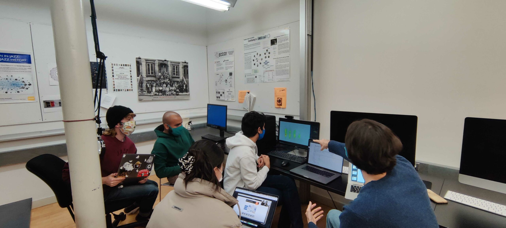
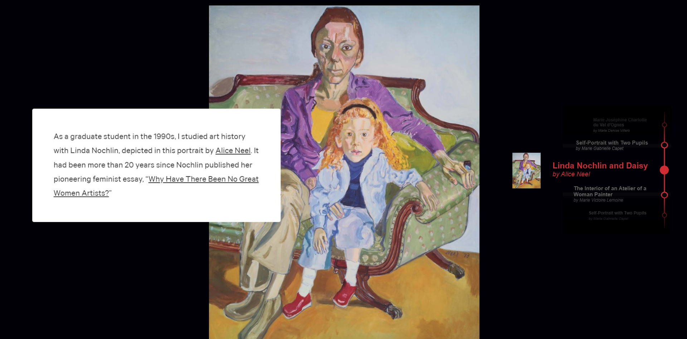
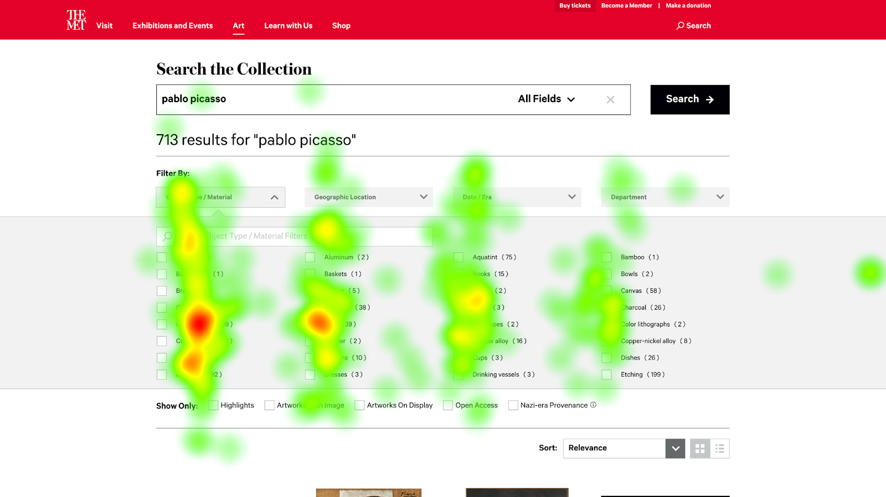
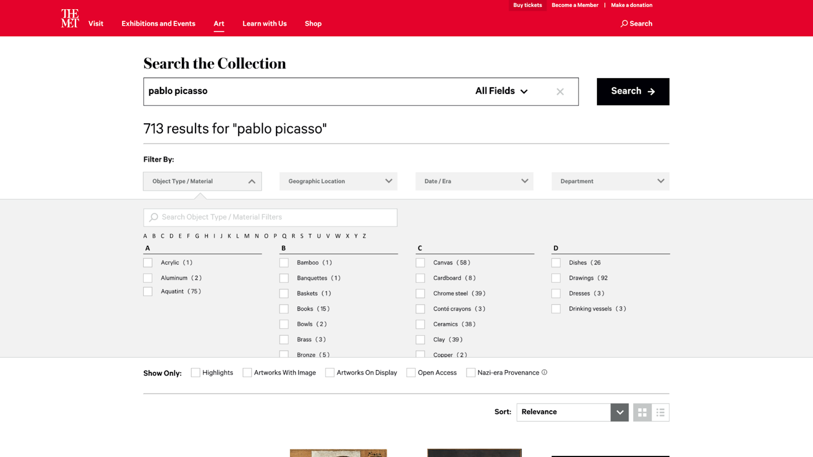

Improving how users find and consume content on the Metropolitan Museum of Art website through a 10-session eye tracking study — uncovering navigation pain points and delivering 10 actionable design recommendations.
Being one of the most celebrated museums on the planet, the MET attracts millions of visitors from across the globe. For those who can't visit in person, the MET website serves as a vital resource to view and interact with the art collection. We partnered with the MET to conduct an eye tracking study on their website and improve the ways in which users discover and consume content.
During our first client meeting, the MET team provided a comprehensive document detailing focus areas, pages under consideration, topics of inquiry, and the user groups of interest. Keeping the timeline in mind, we focused on two major sections: Close Look Articles and The Collection Experience.

Given the complexity of inviting unaffiliated participants to campus, we recruited from within the Pratt community. To avoid overlap, we coordinated with other research teams so no participant tested with multiple groups.
We recruited 10 participants: 7 graduates, 2 undergraduates, and 1 unaffiliated participant. All were frequent museum visitors with at least a generalist interest in art.
We started analysis by reviewing gaze replays and RTA recordings to capture relevant insights. To validate initial findings we cross-referenced with TOI, AOI, heatmaps, and SUS scores.
The MET website scored in the 80–84 percentile range based on its SUS score. What these numbers reveal is that new users can quickly understand how to interact with the website — learnability is a genuine strength. However, the gap between learnability and usability signals friction once users go deeper.
The correlation between text and image — where the image zoomed to highlight the detail being described — was universally praised. Participants appreciated the guided perspective.
"It was interesting how when the text was referencing a part of the piece… it would kind of zoom in on that. It's not like you have to look for it, they're already showing it to you."
— Participant AFinding: Long scroll kills momentum. After spending time on a close-look page, participants felt disoriented and wanted an exit route. The absence of navigation options forced them to scroll all the way to the bottom.
"I moved my head here because I was tired of reading. I probably would have paused here had I not been doing this for you guys, and it just felt like a lot of scrolling at this point."
— Participant O
Users followed a consistent pattern of searching by keyword then using filters to narrow results. The intricate filter system was well-received — but the filter layout created significant confusion.
"I didn't notice graphite was there. I would imagine going down alphabetically instead of across."
— Participant AFinding: F-pattern reading vs. horizontal filter layout. The heatmap revealed a vertical F-shape reading pattern while filters were arranged horizontally. In the 3rd task, all participants struggled to find the correct material filter — only 50% discovered the search bar within the filters.


The client presentation went extremely well. The MET team was particularly interested in learning that users spent significantly more time reading on close look articles than expected. All 10 recommendations resonated as actionable and practical.
This project gave me deep appreciation for the power of objective gaze data in validating (or challenging) assumptions. The disconnect between what users say and where their eyes actually go is striking — and eye tracking makes that gap visible in a way no other method can.